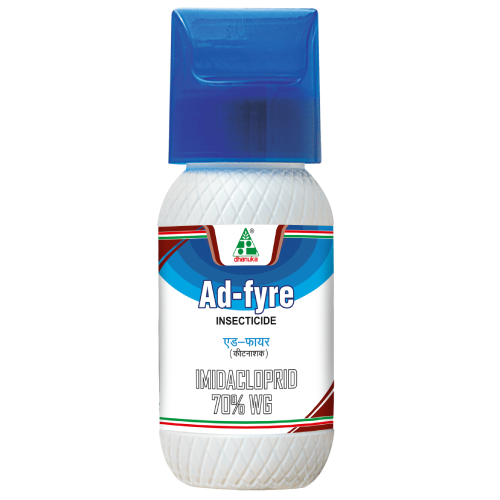

Onion: A Versatile and Essential Crop
Onion (Allium cepa L.), commonly known as the bulb onion, is a widely cultivated vegetable that plays a crucial role in global cuisine and agriculture. India ranks as the second-largest onion producer worldwide, with onions being an integral part of Indian cooking.
üå± Cultivation and Growth
Onions are biennial plants but are usually grown as annuals. They require well-drained, sandy loam soil with proper irrigation for optimal growth. The crop matures in approximately 80 to 150 days, depending on the variety and environmental conditions.
üçΩ Culinary Uses
Onions are used in a variety of ways, including:
- Raw in salads for a crisp and pungent taste
- As a base ingredient in curries, stews, and soups
- Caramelized to add a sweet and rich flavor to dishes
- Pickled or used in chutneys for tangy condiments
üí™ Health Benefits
Onions are packed with essential nutrients and compounds that benefit health:
- Rich in antioxidants: Contains flavonoids and vitamin C, which boost immunity
- Heart health: Helps reduce cholesterol and blood pressure
- Anti-inflammatory properties: Beneficial for people with arthritis and other inflammatory conditions
- Improves digestion: Rich in prebiotic fiber, which supports gut health
üìú Fun Fact
üí° Did you know? Ancient Egyptians considered onions a symbol of eternity and even placed them in tombs of pharaohs!
üåé Global Impact
Onions are cultivated in various climates, from temperate to tropical regions. Major producing countries include India, China, and the United States. They are not only an essential part of global cuisine but also contribute significantly to the economy.
üåø Recommended Crop Solutions
To ensure a healthy and high-yield onion crop, it is essential to protect it from pests, diseases, and nutrient deficiencies. Below are the recommended products, including insecticides, fungicides, and pesticides, that help maintain crop quality and productivity.
| üêõ Pests & Diseases | üõ°Ô∏è Recommended Solutions |
|---|---|
Weeds Control
|

|
Better Crop Health & Yield
|


|